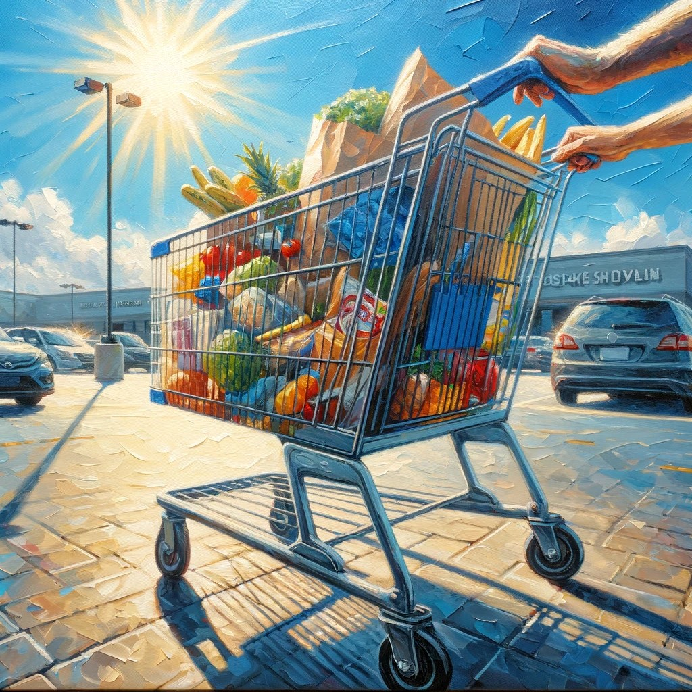
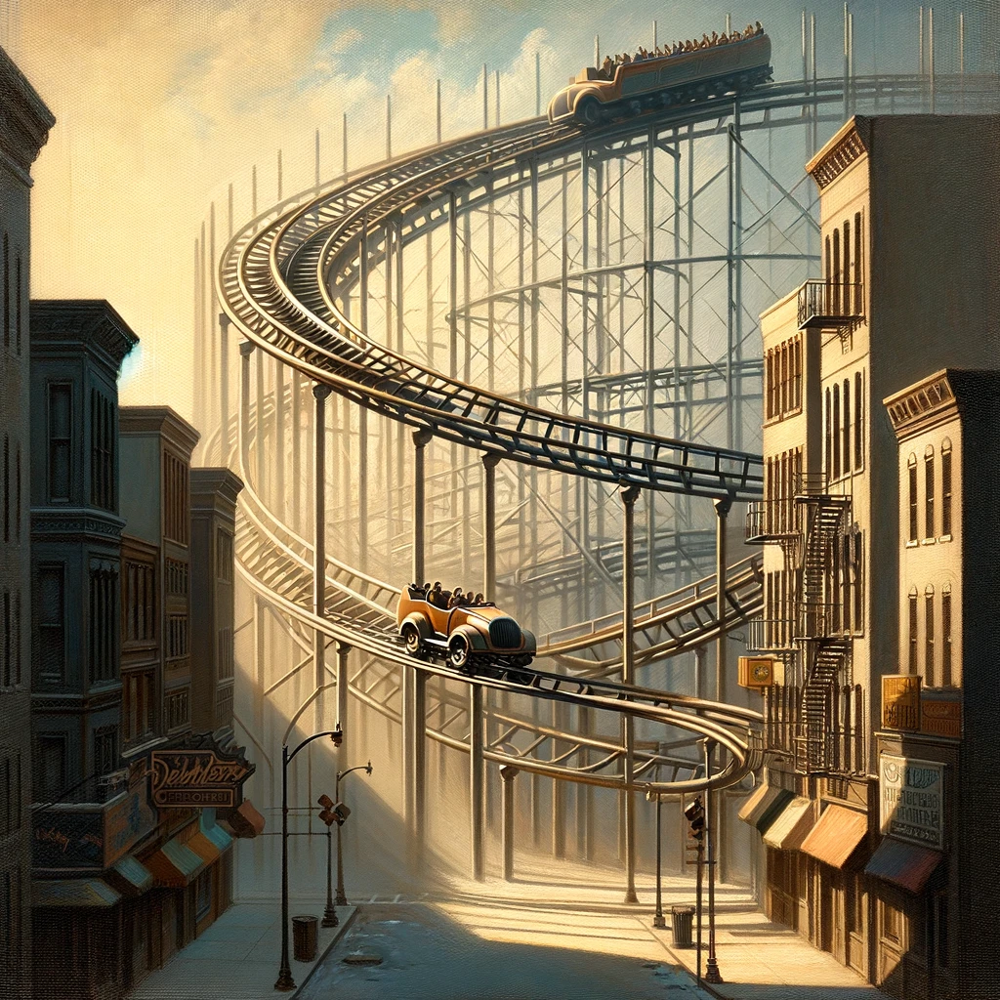

Science2Art, a lesson in artful prompt engineering
1 Newton’s second law of motion
\[ F = ma \]

2 Work-Energy theorem
\[ W = \Delta K\]
3 Gravitational force
\[ F = G * \frac{m_1 * m_2}{r^2}\]
4 Simple harmonic motion
\[ x = Acos(\omega t + \Phi)\]
5 Kinetic energy
\[ K = \frac{1}{2} m v^2\]
6 Potential energy
\[U = mgh\]
7 Elastic force
\[ F = -kx\]
8 Centripetal force
\[F = m \frac{v^2}{r}\]
9 Moment of inertia
\[ I = m r^2\]
10 Momentum
\[p = m v\]
11 Power
\[P = \frac{W}{t}\]
12 Friction
\[ F_f = \mu N\]
13 Bernoulli’s equation
\[p + \frac{1}{2} \rho v^2 + \rho g h = constant\]
14 Projectile motion
\[ y = v_0 t - \frac{1}{2} g t^2\]
15 Torque
\[ \tau = r F\]
16 Law of conservation of energy
\[\Delta E = \Delta K + \Delta U\]

17 Law of conservation of momentum
\[\frac{\delta p}{\delta t} = 0\]
18 Hooke’s law
\[ F = -kx\]
19 Center of mass
\[ x_c = \frac{\Sigma m_ix_i}{ \Sigma m_i}\]
20 Law of universal gravitation
\[ F = G \frac{ m_1 m_2}{r^2}\]
21 From idea to result
21.1 Origins
Physical phenoma are complex and often beautiful. Think about the vortex created through a bridge pillar. We can observe many physical equations in daily life. This led to the original question: How can a painting express a physical equation?.
In the beginning, I only had a few ideas, and capturing all the ideas in photos or in paintings seemed quite effortful. The entire idea landed on the pile of fancy ideas with a low effort/reward ratio.
21.2 ChatGPT & Dalle
Then in 2023 I discovered ChatGPT & Dalle. Most of the above images reflect the ChatGPT results from early 2023 and 2024.
Over the cause of time, the results of Dalle got better regarding image content. The shift from DALL-E 2 to DALL-E 3 accounts for this. See this comparison.  . To me, the Dalle3 images seem sometimes less artistic. However, they are more accurate with regard to the prompt.
. To me, the Dalle3 images seem sometimes less artistic. However, they are more accurate with regard to the prompt.
21.3 The outdated art of prompt engineering
In 2023, the issue back then was to get the content correctly created regarding image content. I used prompt engineering to get ChatGPT to write correct prompts for Dalle.
I first used ChatGPT to generate equations found in daily life, along with examples. Then I used it to create prompts for Dalle. I added an art style which I found fitting for the context.
Some images required tweaking to be usable.
Nowadays, in 2025, the entire process works a lot more straightforward, but as already mentioned, all images look quite similar.
This leads to a  . Is prompt engineering actually something someone should learn? Or is it quickly becoming outdated by the use of AI agents?
. Is prompt engineering actually something someone should learn? Or is it quickly becoming outdated by the use of AI agents?
I think it all starts with the creative process of noting your thoughts and expressing what is in your mind. If you do it on a computer or to another person, this could become very similar. For the people without the skills to craft the images themselves, it provides a better interface to the world.
21.4 Comparison 2023 vs 2024 output
I redid some images in 2024. As mentioned before, the images are smoother but have a very identical look for an identical post to the 2023 version.